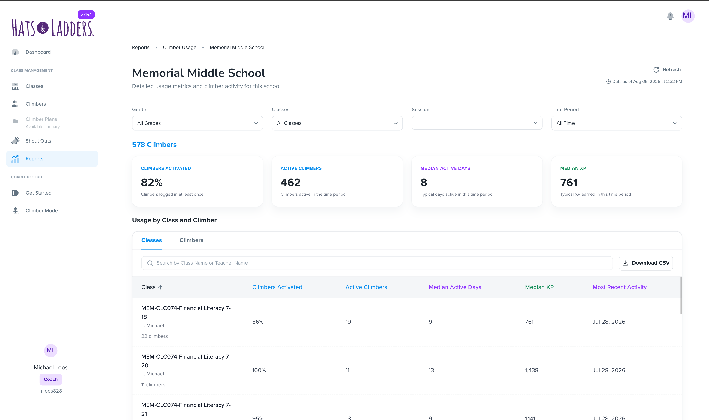

Students Usage Report (AI iteration) · Product Designer @Hats & Ladders
TK
District → School → Climber

An administrator opens this report to compare schools across a district and find the ones falling behind. A coach opens it to find the students in their own classes who have gone quiet this month. Both need the same four numbers to mean exactly the same thing at every level — district, school, class, and individual Climber — while seeing only the students they're allowed to see. I designed the report end-to-end around that constraint, and used AI tooling to iterate on layout and data-shape decisions faster than a conventional spec-and-handoff cycle.
Usage is only useful if it points somewhere. A number that says a district is "62% activated" tells a coach nothing they can act on Monday morning. The report had to carry a reader from a district-wide figure down to a named student with a last-activity date, without ever making them re-learn what a metric means.
The hardest part of a rollup report is not the chart — it's the definitions. These four are computed identically at district, school, and class level, so a reader can compare any row to any other row without a footnote.
Climbers Activated — students who have logged in at least once, meaning the account has been initialized.
Active Climbers — students who were active at any point during the selected time period.
Median Active Days — the median number of days a student was active within the period.
Median XP — the median experience points students earned during the period.
Access isn't a settings problem here — it's the thing that decides where each reader starts. Getting this wrong either exposes students a coach has no business seeing, or buries an administrator three clicks from the comparison they came for.
Enter from the main page with full district scope. They start at the comparison — every school in the district, ranked and filterable — then drill into whichever school needs attention.
Enter from the school page, and see only the classes and students they have access to. The district rollup simply isn't a surface they have — the report starts where their responsibility starts.
Each level answers one question and hands the reader to the next. Nothing is a dead end, and the filter state follows you down.
Every school in the district, each row carrying its enrollment count plus the same four metrics. Schools sitting 40% or more below district-wide median active days or XP are visually identifiable, so the reader doesn't have to scan for them. Rows are clickable straight into the school.
School-level aggregates on the same four metrics, then every class in the school with its own Climbers Activated, Active Climbers, Median Active Days, Median XP, and Most Recent Activity. Searchable by class name or teacher name.
A separate tab listing every Climber at the school: first and last name, student ID, class, activation date, last activity date, active days, and XP earned. Searchable by first name, last name, or student ID — because a coach usually arrives already knowing who they're worried about.
The filter set is deliberately small, and it mirrors between the district and school views in both directions — narrow to two grades at district level, drill into a school, and those grades are still applied. Results update live rather than behind an "apply" button.
The school view adds sorting and filtering by grade, class, session, and time period on top of the same state.
Rather than hand engineering a static spec for a data-dense report, I built working iterations with AI tooling — testing real table densities, filter behaviours, and drill-down states against realistic data shapes before committing to them.
TK — which tools, how many iterations, and which specific decisions changed as a result. Worth naming the ones where the prototype overturned the original assumption.
TK — adoption, coach and administrator feedback, and any measured change in how districts respond to low-usage schools. This section needs real numbers before the page is shared; everything above is grounded in the shipped acceptance criteria, but nothing here is yet.